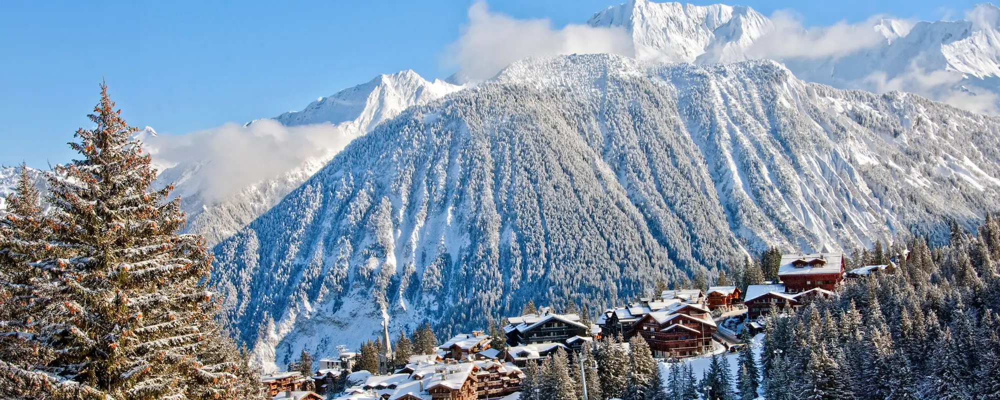
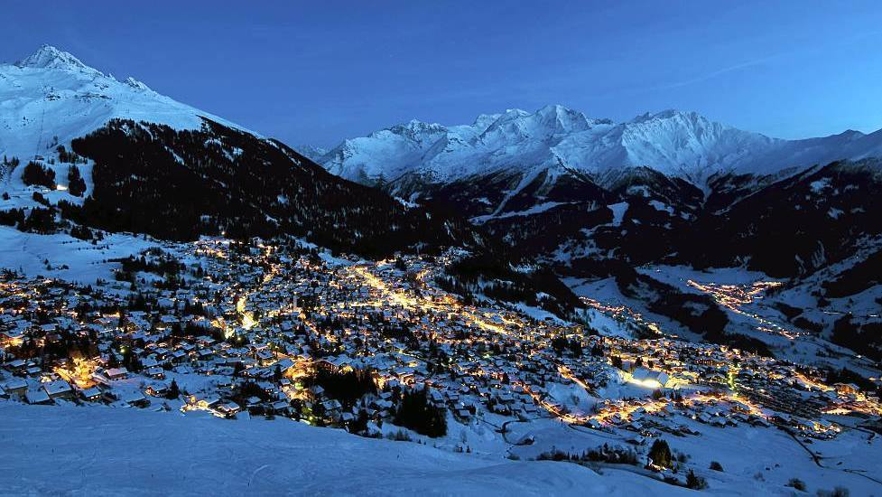

The Alps are home to some of the world’s most glamorous ski destinations—places where pristine slopes meet exquisite hospitality, Michelin-star dining, and breathtaking alpine scenery. If you’re dreaming of a winter escape that blends world-class skiing with indulgent comfort, here are the top five luxury ski resorts in the Alps.
1. Courchevel 1850, France

Courchevel 1850 is the epitome of alpine luxury. Known for its designer boutiques, private chalets, and celebrity guests, it offers direct access to the vast Three Valleys ski area. Expect five-star hotels, heated outdoor pools overlooking snowy peaks, and some of the finest restaurants in France—including several Michelin-starred options.
2. St. Moritz, Switzerland
 A legendary name in luxury travel, St. Moritz pairs glamour with tradition. Frozen lakes, polo matches on snow, and upscale après-ski bars create a truly unique atmosphere. Its hotels are masterpieces of elegance, and the ski slopes are perfectly groomed. St. Moritz also stands out for its world-class spa culture, offering wellness experiences unlike anywhere else.
A legendary name in luxury travel, St. Moritz pairs glamour with tradition. Frozen lakes, polo matches on snow, and upscale après-ski bars create a truly unique atmosphere. Its hotels are masterpieces of elegance, and the ski slopes are perfectly groomed. St. Moritz also stands out for its world-class spa culture, offering wellness experiences unlike anywhere else.
3. Zermatt, Switzerland
 Nestled under the iconic Matterhorn, Zermatt blends natural beauty with refined sophistication. The village is entirely car-free, adding to its serene charm. Luxury lodges provide panoramic mountain views, gourmet dining, and exceptional service. Whether skiing the high-altitude glacier or enjoying exclusive après-ski lounges, Zermatt delivers a flawless luxury experience.
Nestled under the iconic Matterhorn, Zermatt blends natural beauty with refined sophistication. The village is entirely car-free, adding to its serene charm. Luxury lodges provide panoramic mountain views, gourmet dining, and exceptional service. Whether skiing the high-altitude glacier or enjoying exclusive après-ski lounges, Zermatt delivers a flawless luxury experience.
4. Lech Zürs, Austria
 Lech Zürs is one of Austria’s most prestigious resorts, known for its understated elegance. Its beautifully groomed pistes and snowy reliability attract royalty and international elites. Accommodation ranges from chic boutique hotels to lavish chalets, many offering spa suites, private saunas, and fine dining. The atmosphere is calm, refined, and authentically alpine.
Lech Zürs is one of Austria’s most prestigious resorts, known for its understated elegance. Its beautifully groomed pistes and snowy reliability attract royalty and international elites. Accommodation ranges from chic boutique hotels to lavish chalets, many offering spa suites, private saunas, and fine dining. The atmosphere is calm, refined, and authentically alpine.
5. Verbier, Switzerland

Verbier attracts a stylish crowd with its vibrant nightlife, stunning chalets, and dynamic ski terrain. It’s a favourite among seasoned skiers who want luxury without sacrificing challenging slopes. High-end chalets often include private chefs, cinema rooms, and infinity hot tubs with views of the Alps. The mix of glamour and adventure makes Verbier a standout choice.
From glamorous French villages to serene Swiss hideaways, these five resorts offer the ultimate alpine experience—where luxury, beauty, and world-class skiing come together in perfect harmony.